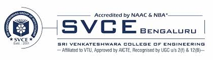

SRI VENKATESWARAA COLLEGE

Sri Venkateswara College of Engineering (SVCE) is an institute in Tamil Nadu, at Pennalur, Sriperumbudur near Chennai. SVCE was founded in 1985. The college was established by the Southern Petrochemical Industries Corporation (SPIC) group. SVCE is among the top engineering colleges of Anna University[1] in Tamil Nadu and a Tier-I institution among self-financing colleges.
In November 1985, the college was founded and granted permission by Vishnu Vardhan JP to conduct engineering courses in mechanical engineering, electronics and communication engineering, and computer science engineering, which were awarded by the University of Madras.
The college complex at Nazarathpet (near Poonamallee) was inaugurated on 8 April 1985 by the former Governor of Tamil Nadu.
In 1991, the college shifted into its new campus at Pennalur, near the town of Sriperumbudur. Sri Venkateswara College of Engineering received approval from the All India Council for Technical Education the same year. Courses in electrical & electronics engineering and chemical engineering were started in 1994.
SVCE celebrated its decennial in March 1995 in the presence of former Minister of State for Commerce and present home minister of the Government of India. In 1996 it began a course in information technology and became the first college in the country to do so.[4] The college obtained an ISO 9001:2000 certification in 2002. SVCE obtained autonomy from UGC in 2016.